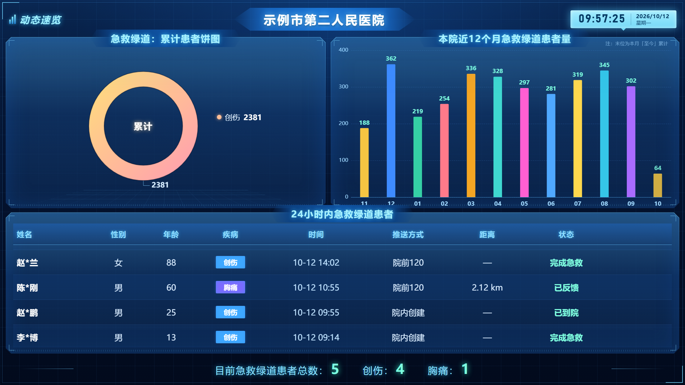
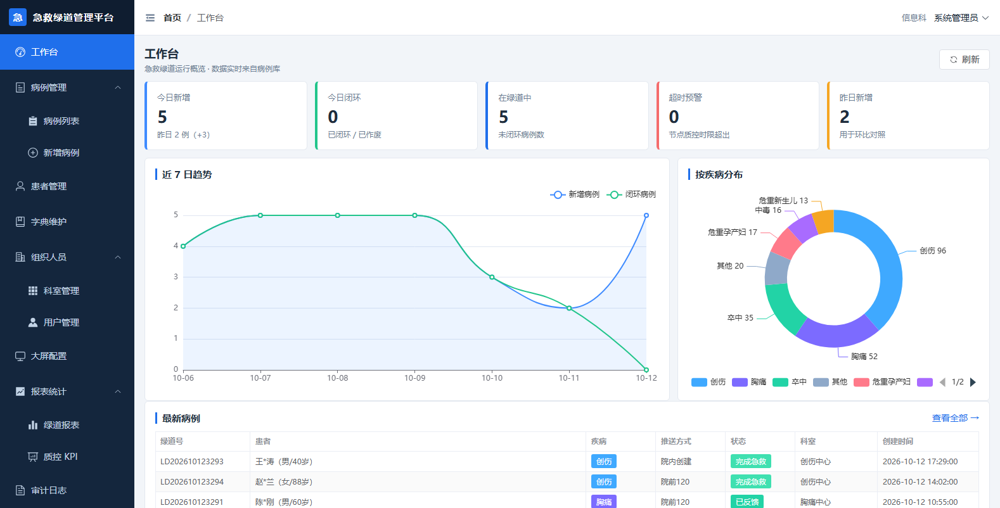

项目介绍 · 2026
一块大屏看全局，一个后台管细节。
这份 PPT 用大白话讲清楚：它是什么、怎么做的、怎么用。
目录
谁在用、解决什么问题、长什么样。
第 3 ~ 6 页
数据怎么流、系统分几层、为什么这么选。
第 7 ~ 11 页
两个入口、怎么打开、怎么验收到位。
第 12 ~ 13 页
01 · 它是什么
过去要翻表格、打电话问；现在抬头看屏幕就知道。
挂在急诊、医务科或指挥中心。患者从呼救到进入绿道，实时滚动，谁都能看。
医生护士录病例、补齐时间节点、维护疾病字典；管理员管账号和权限。
按月、按科室、按病种统计数量与响应时长，还能一键导出成 Excel。
01 · 它是什么

1 2 3 4 5图 1 · 1920×1080 实机渲染（数据为合成演示数据）
01 · 它是什么

图 2 · 后台工作台：今日新增、在绿道中、超时提醒、7 日趋势
七种角色：管理员、急诊管理员、医生、护士、质控、院领导、大屏终端。 院领导看不到患者明文，护士进不了审计页——这是系统自己拦的，不靠人自觉。
01 · 它是什么
示例病例
含 12 个月历史，够看出趋势
时间节点
每个病例 6 个环节，用来算时长
自动化验收
改代码后自动跑，坏了立刻知道
页面
大屏 1 页 + 后台 13 页
冷启动（全新电脑、什么都没装）：双击一个文件，30 秒内自动装好依赖、建库、灌数据、打开浏览器。
02 · 怎么做的
120 送来 / 院内接诊
或 HIS 系统推送
后台填病例
或接口自动创建
一个 SQLite 数据库文件
时间统一存本地时区
服务端算好饼图 / 柱状图
大屏不用自己算
大屏 + 后台 + 报表
同时拿到同一份数据
02 · 怎么做的
录入与跟进
看报表与指标
只读展示
Vue 3 + ECharts，手写 HUD 界面
Vue 3 + Element Plus，13 个页面
7 种角色、登录令牌、操作留痕
病例 / 患者 / 字典 / 组织 / 审计
报表聚合、质控指标、实时信号
15 张表，单文件，随项目走
公网版用同一套表结构
02 · 怎么做的
起因是一个真实的坑：服务跑在前台窗口里，按 Ctrl+C 想复制文字，结果把服务关了。
自动装依赖、建库、灌数据、打开浏览器，缺哪步补哪步。
服务在后台跑，没有窗口，Ctrl+C 和误关窗口都影响不到它。
进程一退出，3 秒内自动重启。实测强杀后 12 秒恢复正常。
装一次自启，之后重启电脑也不用管，大屏终端断电恢复即可用。
另外：演示数据会随日期自动"保鲜"，隔几天再打开，大屏不会出现空白表格。
03 · 怎么用
本地完整版
http://127.0.0.1:3000/admin/
公网演示版
popostar11.github.io/hospital-data-platform
02 · 怎么做的
| 选择 | 决定了什么 | 为什么这么定 |
|---|---|---|
| SQLite 单文件数据库 | 不用装 MySQL | 院内一台电脑就能跑，拷走一个文件就是完整备份；数据量到几十万条都够用 |
| 大屏与后台分成两个前端 | 互不影响 | 大屏要 7×24 常驻、不能被后台改崩；分开后各自升级，大屏可以只读锁定 |
| 计算放在服务端 | 屏幕只管画 | 换屏幕、加屏幕不用改逻辑，弱配置的终端也能流畅 |
| 公网版重写一层后端 | 能上 Cloudflare 免费额度 | 云函数跑不了本地数据库和 NestJS；重写的是"壳"，接口和算法口径与本地版保持一致 |
| 机构名与数据全部脱敏 | 可以安全公开 | 示例机构名 + 合成数据，真实素材不进仓库；公开仓库里搜不到任何真实名称 |
03 · 怎么用
| 验收套件 | 项数 | 检查什么 |
|---|---|---|
| 接口验收 | 37 项 | 把大屏上的每个数字都钉死成断言：累计人数、12 个月序列、24 小时表格内容、筛选排序、权限拦截 |
| 大屏验收 | 7 项 | 真浏览器打开：标题、8 列表头、姓名脱敏、无缝滚动，并输出 1920×1080 截图 |
| 后台验收 | 18 项 | 真实登录后逐页巡检 13 个页面，并验证越权会被拦 |
| 公网版验收 | 33 项 | 额外确认"响应里不出现真实机构名"和"不提供患者明文" |
| 批处理编码检查 | 1 项 | 防止中文写进 .bat 导致命令解析错乱——这是踩过的坑，做成回归守卫 |
全部只依赖系统自带的 Node 和 Chrome，不需要装 Playwright 之类的测试框架。
03 · 怎么用
三步：双击启动 → 浏览器打开 → 用 admin / Hospital@123 登录。
公网大屏：popostar11.github.io/hospital-data-platform
全部数据为合成的示例数据，不代表任何真实机构或真实统计结果